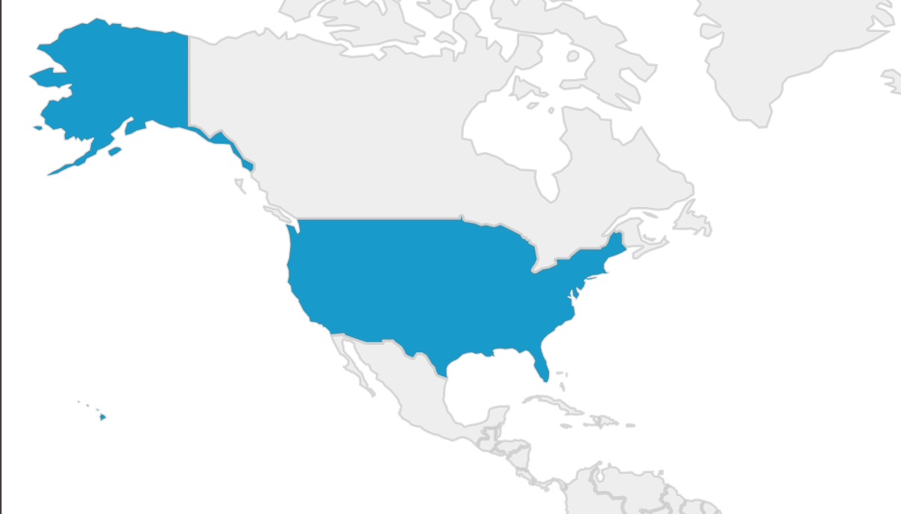
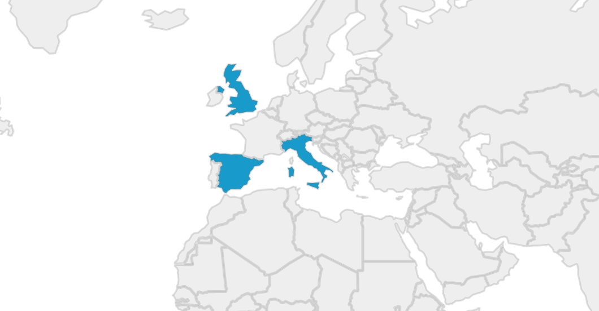
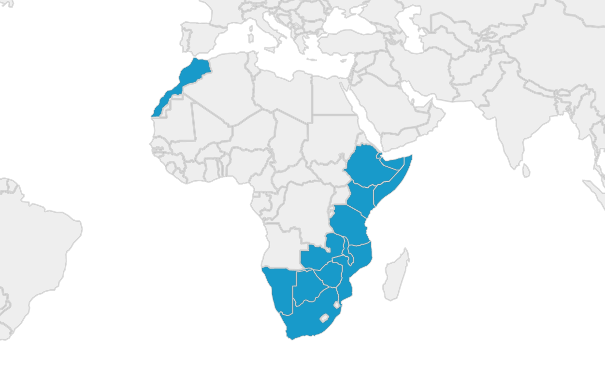
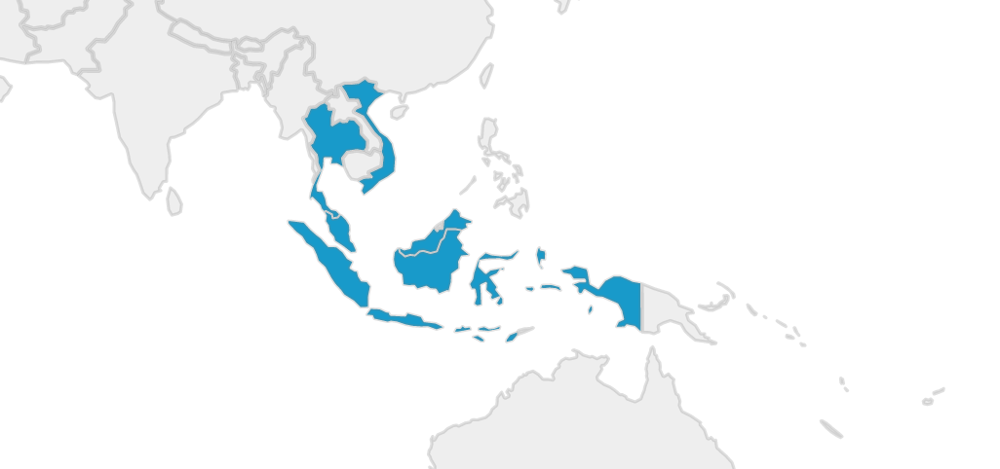
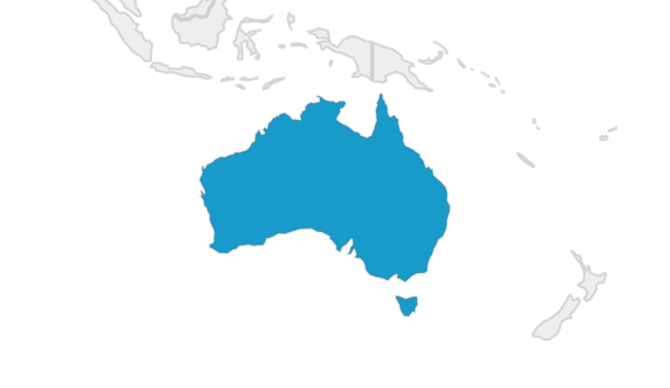

Travel
An avid traveller, I've now visited over 27 countries across 5 continents.
North America
The United States
For almost two years I lived in New York, the city that never sleeps. I lived here while I worked for the Hon. Kevin Rudd, 26th Prime Minister of Australia, in his capacity as President of the Asia Society Policy Institute. I took up residence first in Manhattan, before moving to South Williamsburg. Most of my time in the US was spent moving between New York and Washington, D.C.
Europe
I've lived, travelled, and worked in Europe on a few separate occasions over the last couple of years.
Italy
Based out of Lago di Como in the north of Italy, I lived here briefly with the Hon. Kevin Rudd as we finished writing his autobiography. He had started this project from the picturesque Bellagio. We set up shop in a villa in the historic commune of Blevio, in the restored Villa Calvi. During this time I travelled throughout the north, visiting Venice, Milan, Torno, Turino, and Verona.
I later returned to Italy in 2019, spending close to a month recovering and relaxing in Rome. During this time I visited the Vatican, practiced my Italian, and immersed myself in Southern Italian culture.
The United Kingdom
Between 2015 and 2017, London became my getaway from the hectic work life I had in New York. I'd periodically fly to the capital to take a break, refresh myself, and explore the highlights of British culture. I've not nearly spent enough time here. I was, however, lucky enough to encounter the Queen's escort on my first day in the country, as they transported the Crown Jewels in their heavily guarded entourage. Quite a sight.
Spain
Spain marked the conclusion of my epic cross-continent adventure across Africa. I spent just a few short days in Barcelona, hemorrhaging what remained of my travel budget on expensive Spanish cuisine and tourist traps. The country is beautiful, the food is incredible, and the people are nice. Spain deserves a much longer visit.
Africa
Crossing Africa. The adventure of a lifetime. I had just quit my job, exhausted after half a decade of politics, and on a whim bought myself a one-way ticket to South Africa. I had no plans, no contacts, no real agenda. Just a backpack, a camera, and a wad of US bills to exchange for local currencies along my way. With years of traveling and backpacking under my belt, I thought I was more than capable of handling what Africa had to offer. Little did I realise just how much of an adventure it would be.
South Africa
The start of my African overland adventure. I used this as a travel hub as I explored the surrounding countries.
Mozambique
Great cuisine, great people. I explored much of the eastern coast, from Maputo up to the northern end of the Bazaruto Archipelago. At the time, the northern part of the country was undergoing an ISIS incursion, and was not safe to visit.
Botswana
Fascinating country with an amazing history. Considered one of the safest places in Africa today. I explored much of the country by truck, camped in the desert, and visited many of the major game reserves. Lots and lots of elephants.
Namibia
The landscape of Namibia is unlike any other on this planet. Dry and arid, it is amazing that wildlife can survive under such harsh conditions. I explored the endless sand dunes, reached the Skeleton Coast to the west, and visited the famous Etosha reserve in the north.
Zambia
Zambia strikes an incredible contrast against the arid landscape of Namibia - here there is lush forest and vegetation everywhere, more rain falls, and wildlife is more abundant. Lusaka offers the launching point for the Tazara train, a three day journey that takes you to Dar es Salam in Tanzania.
Tanzania
Words cannot describe the beauty of Zanzibar, the island paradise off the coast. Sand like fine powder, food unlike anywhere else in the world, and scuba diving that is amongst the best you can experience. Mainland Tanzania is equally stunning, with Mount Kilimanjaro providing one of the continent's most breathtaking spectacles.
Malawi
I visited Malawi at a time of great civil unrest, as riots broke out in capital cities across the country. Here I had my first freshwater diving experience, swimming with the unique cichlids that inhabit Lake Malawi.
Kenya
Kenya too was undergoing more civil unrest during my visit, closing off the northern part of the country along the border with Ethiopia. I spent much of my time in Mombasa, learning about the histories of the Portuguese "coral" forts along the eastern coast of Africa.
Ethiopia
Addis Ababa is a stunning, metropolitan city that has evolved without the same Western influences that have influenced much of the rest of Africa. The only country on the continent to have never been colonized, Ethiopia retains a unique language, calendar, and culture. The food here is incredible.
Djibouti
Hot. Very, very hot. And home to dozens of foreign military bases. While I was here, the country was embroiled in the Yemeni conflict just kilometres away.
Somalia
A crazy part of the world, but one of the friendliest people I encountered in Africa. We were able to enter Somaliland, the self-declared independent and autonomous region in the north of the country.
Morocco
Good food, friendly people. I'd intended to stay for a lot longer...but plans changed.
Asia
Malaysia
My home away from home. I went to middle and highschool here as an expat. I later lived in Penang as an English teacher, and on Mabul Island off the coast of Sabah as a Divemaster.
Indonesia
What was supposed to be a 48 hour stop over turned into a three week adventure. Climbing to the pinnacle of Kawah Ijen would be one of the highlights of my life.
Thailand
An easy getaway while I lived in Malaysia. I travelled here many times during my undergraduate degree.
Vietnam
I've also visited Vietnam on multiple occasions. I've covered the country from North to South. Hoi An will always have a soft spot in my heart.
Maldives
Incredible diving. Ridiculous beaches. A small but expensive paradise.
Singapore
Extremely clean. Far too organized. Not entirely my jam.
Australia
Home. My birthplace. The country I always return to. Paradise.
I was born in Melbourne, but I've lived most of my life in sunny Brisbane, Queensland. It's a great place to come back to - beaches are nearby, the weather is generally quite moderate, and the city isn't as busy or serious as some of the larger capitals down south. It's a place I will always call home.